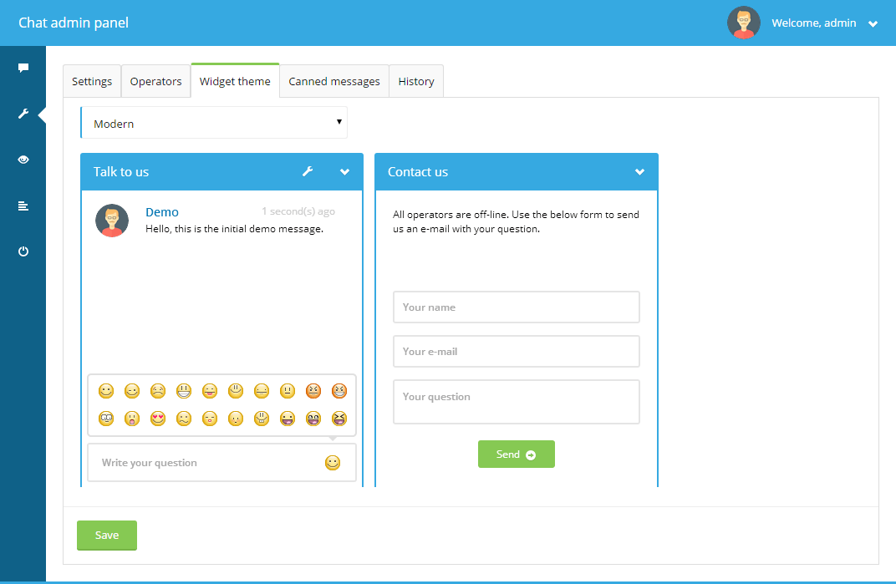
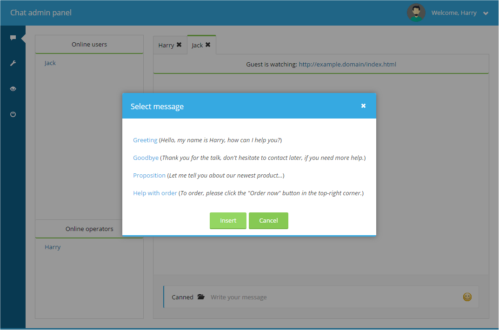

-
System Requirements
For the application to function correctly PHP version 5 or newer is required and a MySQL 5.2 or newer database. Browsers starting with IE8 and newer are supported.
-
Video Tutorial
Please follow this link: https://www.youtube.com/watch?v=23A_JVwN0IQ to see a YouTube video showing how to install the chat on HTML website. For more details refer to next sections of this documentation.
-
Installation
Instructions for installation are also available in the Video Tutorial .
After downloading all the files, copy and upload the
livechatdirectory anywhere on your web server (for example to the root directory of your website).livechatfolder contains all of the necessary files (configuration, scripts, data and resources).If you're using a CMS system or shoping software (like WordPress, Joomla, etc.) copy this folder to the root directory of your CMS.
Update file permissions
This section is only important if your web server doesn't allow PHP to access/edit files by default.The following files/directories should be both readable and writable by PHP:
- whole
/datafolder, - whole
/uploadfolder + its subfolders, /php/config/app.settings.phpfile,/php/config/parameters.phpfile.
Run installation wizard
Visit the following URL:
<your_web_server_url>/<livechat_dir>/php/app.phpWhen application is accessed for the first time, you will be redirected to the installation wizard:
Following the instruction, click
Let's go!. The below page will be displayed next:Fill the form with your settings and click
Save. The next page will be:Here, check your submitted data and confirm using the
Installbutton. If everything went well, the final page will be displayed:Add chat widget to your web page
Now you're ready to embed the chat widget on your website. To do that you have to add a special line of code in your main HTML document/layout. To get this code snippet go back to admin panel (
<your_web_server_url>/<livechat_dir>/php/app.php?login) and selectGet widget scriptfrom the top right menu. This will display a message dialog with the code to copy:Paste it in the
headsection of your website or at the end of thebodytag and that's all. This script will load all the dependencies and add the chat widget at the bottom right corner of your website. Now, when you visit the site, it should show the widget with contact form displayed in it (as no operators are available on-line yet). - whole
-
Uninstallation
You can uninstall the application from the server using the uninstallation page. Just select
Uninstallfrom the top right menu. The following page will be displayed:After clicking the
Uninstallbutton, the application will be uninstalled and you will see the following message: -
WordPress Installation
To install the chat on a WordPress website follow the same steps described above for usual installation. Only remember at the last step that the chat widget should be embedded in the main layout file (so it's available in any section of the website). To make this task simple for you, you can use the
Per page add to headWordPress plugin (http://wordpress.org/plugins/per-page-add-to/), which allows you to insert additional content to theheadsection of your website. After installing the plugin and turning it on, go toSettings/Add <head> to every pagein you WP admin panel, paste the widget embedding snippet (look at the previous section to see where to get it from) into the text area and clickSave. Next time you visit any page of your WordPress site, the widget should be visible in its bottom right corner. -
Joomla Installation
To install the chat on a Joomla website follow the same steps described above for usual installation. Only remember at the last step that the chat widget should be embedded in the main layout file (so it's available in any section of the website). To make this task simple for you, you can use the
EasyScriptJoomla plugin (http://extensions.joomla.org/extensions/core-enhancements/coding-a-scripts-integration/head-code/11936/), which allows you to insert additional content to theheadsection of your website. After installing the plugin and turning it on, go toExtensions/Plugin Manager, select EasyScript plugin from the list in, display theOthertab in its settings and paste the widget embedding snippet (look at the previous section to see where to get it from) into theAdditional itemstext area. Finally click theSavebutton. Next time you visit any page of your Joomla site, the widget should be visible in its bottom right corner. -
Drupal Installation
To install the chat on a Drupal website follow the same steps described above for usual installation. Only remember at the last step that the chat widget should be embedded in the main layout file (so it's available in any section of the website). To make this task simple for you, you can use the
Add To HeadDrupal module (https://drupal.org/project/add_to_head), which allows you to insert additional content to theheadsection of your website. After installing the module and turning it on, go toModules, find Add to Head module on the list and clickConfigurenext to it. In the window that displays chooseAdd another profile. The form will display. Name the entry however you'd like to and paste the widget embedding snippet (look at the previous section to see where to get it from) into theCodetext area. You can also fill in the included/excluded path using thePathstext area and set the script to be placed in Head or Scripts section using theScope of additionradio buttons (Scripts section will most probably be the best option). Finally click theSavebutton. Next time you visit any page of your Drupal site, the widget should be visible in its bottom right corner. -
OpenCart Installation
To install the chat on a Drupal website follow the same steps described above for usual installation. Only remember at the last step that the chat widget should be embedded in the main layout (so it's available in any section of the website). To make this task simple for you, you can use the
Add To HeadOpenCart module (http://www.opencart.com/index.php?route=extension/extension/info&extension_id=11171), which allows you to insert additional content to theheadsection of your website. After installing the module and turning it on, go toExtensions/Modules, find Add to Head module on the list and clickEditnext to it. In the page that displays clickAdd Moduleto create a file entry. The form will display. Select theJavascript (js)in theFile typeinput and and paste file path part of the widget embedding snippet (look at the previous section to see where to get it from) into theFile pathtext input. The file path part means you should only use the embedding snippetsrcattribute's value here (and not the whole widget snippet).For example, if the snippet looks like this:
<script type="text/javascript" src="http://example.domain/livechat/php/app.php?widget-init.js"></script>
You should only copy the
http://example.domain/livechat/php/app.php?widget-init.jstext and use it in theAdd to Headconfiguration.After adding the first entry in the module, repeat the process adding additional entries for as many site sections you'd like the widget to appear on. First add the entry as previously described and after that select another page type from the
Layoutinput. Add as many entries as there's layout types available (so the widget is present everywhere).Finally click the
Savebutton. Next time you visit mentioned pages of your OpenCart website, the widget should be visible in the bottom right corner. -
Usage
There are 3 user types in the application: admin, operators and guests. Admin is the user that can run (un)installation, change global settings, manage operators and browse chatting history, but is not allowed to chat. Operators can chat with online guests and once at least a single operator logs in, chat widget won't display the contact form no more - guest login form will be displayed. Operators are also allowed to change their profile data and browse chat history. Guests are the visitors to your website that log in through the chat widget and talk with operators.
Logging in
To login to the chat always use the
<your_web_server_url>/<livechat_dir>/php/app.php?loginpath for both admin account and operator accounts. For admin account useadmin(or other, if you changed the default name in the installation wizard) as the login and for operators use their e-mail addresses as the login.Logging out
To log out from the chat open the top right menu and click the
Logoutitem.Global settings
To change application settings log in using the admin account and go to the settings section using the wrench icon on the left. A form with multiple configuration options will be displayed, where you can update such options as: colors, contact e-mail, messages and labels translations, hide when offline feature, new message sound and maximum connections allowed. While most of the settings are self explanatory, the following two require a little clarification:
Hide when offline- checking this option will cause the chat widget not to be shown in case no operator is available on-line.Show widget automatically- defines whether the widget should be automatically opened after given time (without the visitor clicking it).Show widget automatically after (seconds)- specifies the number of seconds after which widget should be automatically opened.Mobile version breakpoint- This is the widget's containing page width in pixels below which mobile version of the widget is used. In other words - if containing page is smaller than this value, standard widget will be hidden and its mobile version will be used.-
Maximum connections- this option specifies the number of maximum guest chats opened simultaneously. For example, if the value is 10 the 10 visitors will be able to chat with operators at the same time. This feature can help you reduce your server's power usage or adjust the maximum number of chats based on how many simultaneous talks you can handle. Guests that visit your page while the limit is met will be presented with the contact form view instead of the chat view. After currently chatting guests leave the chat, new visitors will be able to connect.
This section is only available if logged in as the admin user.
Widget themes
Here, you can change the visual theme of the chatting widget. It will be immediately updated.
Widget preview
Operators and administrator can preview the chatting widget at any moment by clicking the
Widget previewitem in the top-right menu (or eye icon on the left menu). This will result in opening the below page in a new browser tab. There, you can test widget's look and behavior:
Operators
Next to the settings tab is the operators tab, which is used to manage all of the operators. You can add, remove or modify the users here. If you're logged in as an operator, you can change your own profile information. Additionally, passwords can be reset here and profile avatars selected/uploaded.
Before you're allowed to chat with the visitors, you have to create at least one operator account and log in using it. To create an operator go to
Operatorstab and clickAdd newbutton at the top. The following form will be shown:Fill the form with the operators data and click
Save. The e-mail address you specify here will be used to log in with this operator's account. Important: thePasswordfield has to be filled with at least 6 characters.Chatting
Before you're allowed to chat with the visitors, you have to create at least one operator account and log in using it. For more information go to Operators section.

For your visitors to be able to chat you have to be logged as an operator. Otherwise, the guests will only see a contact form fallback and not the chat login form.
The default section that's displayed after logging in as an operator is the chat view. All on-line users are listed on the left here (
Online usersandOnline operatorslists). If you move your mouse cursor over a user's name, you'll see a small popup with information about that user. You can either wait for incomming messages or click on the user's name and start a conversation yourself. When new messages arrive operators are notified with sound as well as blinking envelope icons next to the tab headers. After opening user's tab you can type your messages into the input on the bottom (Write your message) and press enter to send them. You can also use emoticons by clicking their symbol on the right of the input.Only one operator is allowed to talk with a guest at the same time. In case a second operator tries to send messages to the given guest, the system message will be displayed, informing the operator that the guest is already handled by someone else.
When talking with a guest, on top of the chat's view there's a live status of the page guest is currently visiting.
Conversations between two operators are also possible - just click operator's name on the list of online operators.
Guest chatting
Guest chatting works in exactly the same way. Additionally, while chatting, guests can access a settings menu using the wrench icon on the title bar to update settings like emoticons usage, sound notification usage, auto scrolling the chat box and auto showing of the chat.
If a guest refreshes the web page, which holds the chat widget, he is still allowed to talk using the same session and any previous messages are displayed in the chatbox.
Canned messages
The application allows you to create a list of messages that can be quickly pasted into conversation with a visitor. You can manage them inside the
Canned messages(only when logged in as the administrator user).Important: You can use dynamic placeholders inside the canned message body. The following placeholders are available:
{name}- when operator uses the message it will be replace by his actual name{mail}- when operator uses the message it will be replace by his actual e-mail address
To use canned messages, click the
Cannedbutton (on the left of the message input field) when talking to a guest. The following pop-up window will be displayed:First select one of the messages by clicking on its text. Next, press
Insertand the message will be placed inside your message input.History
History section allows both admin and operators to browse and search through the whole conversation history. Leaving all of the filtering inputs empty will result in all of the talks being listed. To show a given conversation after it's found click the item on the results list under the search form and the talk will be displayed on the right. In the talk's view you can also see its participants profile information and talk's start/end date and time.
Important: If you notice the application slowing down, you might try clearing the history of messages by clicking
Clear history.Adding more predefined avatars
In addition to uploading custom avatars, a predefined set of avatar images is available that both guest and operators can easily use. If you would like to modify the images available as predefined avatars, you just need to modify the contents of the
upload/default-avatarsdirectory. The application automatically iterates through all the avatars from this folder and makes them available in the chat.Adding more message notification sounds
New message notification sounds played when new messages arrive can be found in
audiodirectory. If you would like to use additional sounds for this purpose, just copy the MP3 files to this directory. The application will automatically load all of the new files and enable you to choose one of them usingNew message sounddrop-down menu in admin's panelSettingstab.JavaScript API
The widget exposes a JavaScript API to the page that contains it. This way you can interact with the widget using you own JavaScript code. The API can be accessed via the
phpLiveChatglobal object.Important: your custom JavaScript code has to be placed after the widget embedding script - otherwise, phpLiveChat global object will not be accessible.
Here is an example code presenting all of the available features:
// Show the widget phpLiveChat.show(); // Turn on the full-screen mode phpLiveChat.fullscreenOn(); // Turn off the full-screen mode phpLiveChat.fullscreenOff(); // Hide the widget phpLiveChat.hide(); // End the chat phpLiveChat.endChat(); // Send a message to operator phpLiveChat.sendMessage('Hello! :)'); // Execute custom code when operators are online phpLiveChat.onoperatorsonline = function() { alert('Operators are online'); }; // Execute custom code when operators are offline phpLiveChat.onoperatorsoffline = function() { alert('Operators are offline'); }; // Execute custom code when new message is received phpLiveChat.onmessage = function() { alert('New message just arrived'); }; // Execute custom code when a visitor logs into the chat phpLiveChat.onloginsuccess = function() { alert('Visitor started the chat'); }; // Execute custom code when a visitor ends the chat phpLiveChat.onlogoutsuccess = function() { alert('Visitor finished the chat'); }; // Execute custom code when operator is typing phpLiveChat.onoperatortyping = function() { alert('Operator is typing right now'); };